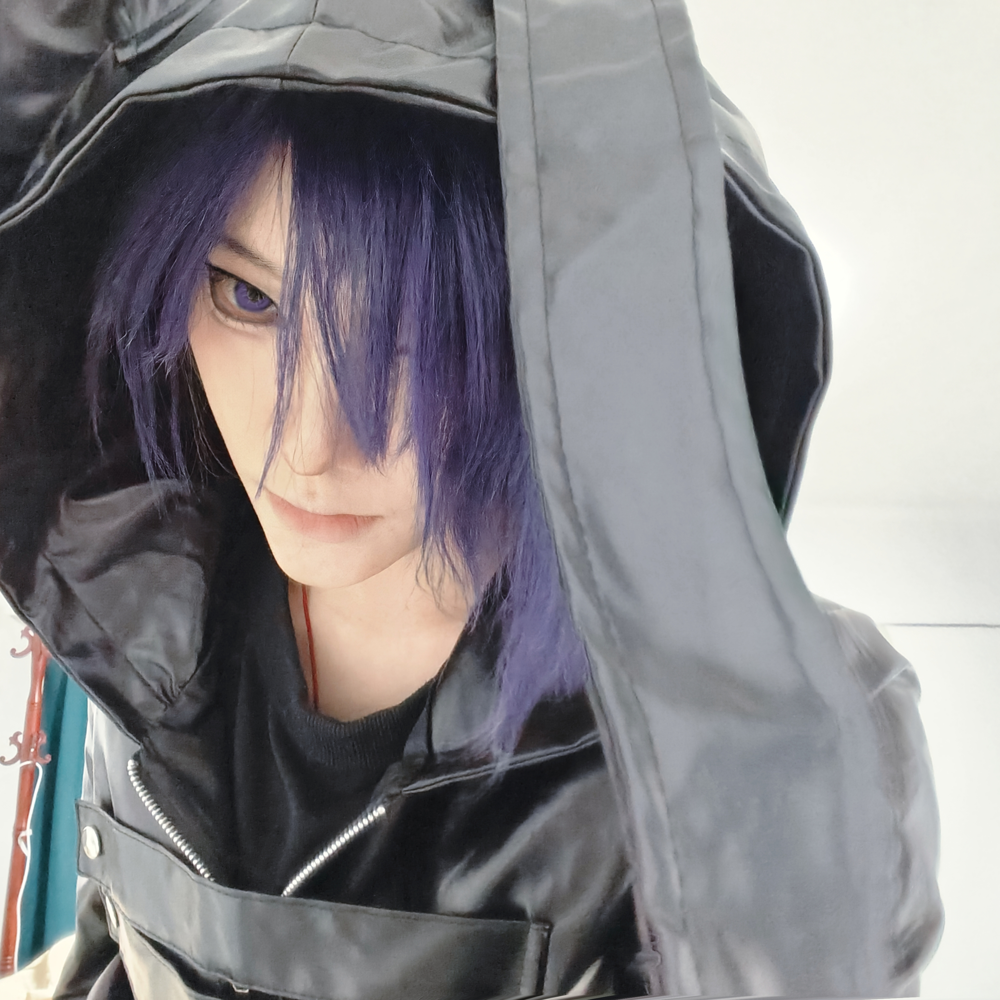

Case 01
2400W 双向逆变器
负责风扇策略与热管理设计，通过软硬件协同和独立调速算法显著降低系统噪音，并优化整机散热效率。
- Power Electronics
- Thermal
- Embedded
Power electronics engineer, AI-native builder, and independent developer.
目前就职于安克创新便携式储能业务部，负责功率硬件相关工作，But，欢迎来找我聊关于职业发展、AI、街舞和一切其他。

负责风扇策略与热管理设计，通过软硬件协同和独立调速算法显著降低系统噪音，并优化整机散热效率。
基于 FastAPI 与 Claude 3.5 搭建闭环问答系统，利用 RAG 将群聊记录自动转化为结构化知识库。
面向职场父母的 AI 育儿辅助产品概念，通过大模型监控婴儿状态并提供持续性的情绪价值支持。
我是一名功率硬件工程师，目前就职于安克创新，隶属于便携式储能业务部。毕业于东北林业大学通信工程专业，现常驻深圳，工作重心围绕功率电子、热管理设计、双向逆变器开发以及嵌入式软硬件协同展开。
除硬件研发外，我也持续投入 AI 架构与独立开发实践，熟悉 Node.js、Python 与 FastAPI，能使用Codex、Claude Code 等工具快速完成原型构建与闭环验证。
专注便携式储能场景中的功率电子、热路径优化、系统噪音控制与工程落地。
深入研究 RAG、Agentic Workflows 与 MCP，关注多组件协作下的系统可扩展性。
熟练使用 Cursor、Codex、Claude Code，并具备 Node.js、Python、FastAPI 实战经验。
长期关注 AI + Hardware 的融合方向，尤其对具身智能与世界模型保持持续投入。
“From power systems to intelligent systems.”
能够独立完成 Gemini API 在 macOS 与代理环境下的本地集成，并实现基于 Claude 3.5 的闭环 QA 系统。
熟悉 Python、FastAPI 与 Node.js，适合快速搭建知识库、Agent 工作流和实验性产品原型。
习惯从约束、效率、协同和可扩展性出发理解问题，这也是硬件研发经验带给 AI 实践的优势。
工作之外，我长期保持舞蹈训练，尤其喜欢 K-pop 和 Urban 风格。对我来说，舞蹈和工程其实很像，都是节奏、控制和反馈的练习。
我习惯通过镜像处理、变速和 8 拍分段以及先从重复的段落记忆再串联零散的主歌这些方法进行视频自学，这种拆解动作与反复校准的过程，也和我处理技术问题的方式非常接近。
偏好节奏感明确、控制力强、动作质感清晰的编舞风格。
用镜像、变速、8 拍分段等方式提高动作学习效率，形成稳定训练闭环。